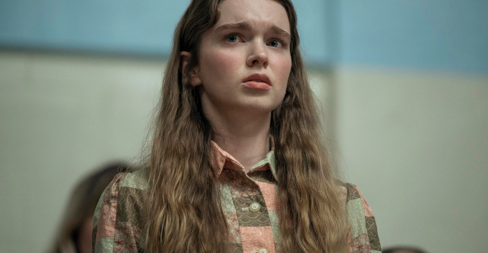
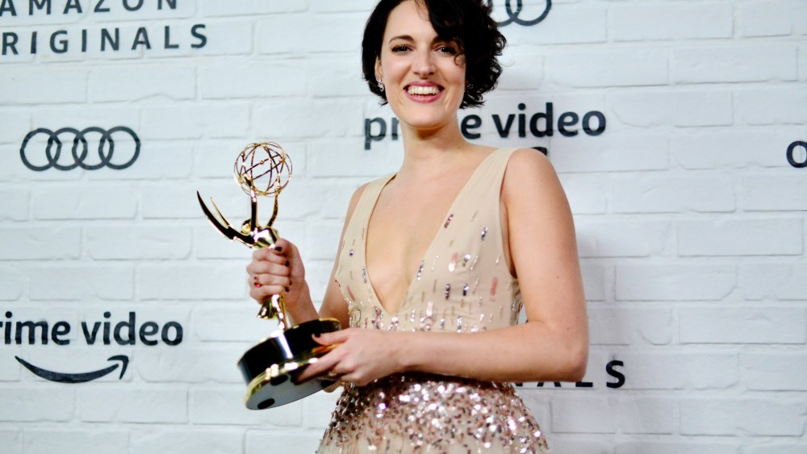

|
Wednesday · October 7, 2026
Pop Culture Digest
What’s actually dominating today
|
| Wednesday’s conversation: Hollywood says goodbye to Eva Marie Saint, the last star of its Golden Age, Mike Flanagan’s Carrie arrives on Prime Video to strong reviews, the Emmys leave broadcast TV for good, and Miley’s Bass Persuades takes a record-setting chart plunge. |
|
In Memoriam
Eva Marie Saint, the last star of Hollywood’s Golden Age, dies at 102 |
The actress died Tuesday of natural causes at her home in Los Angeles, surrounded by family, her representative confirmed. She was the oldest living Oscar winner, having won best supporting actress for her very first film role, as Edie Doyle opposite Marlon Brando in Elia Kazan’s On the Waterfront (1954). Five years later she played the cool, dangerous Eve Kendall opposite Cary Grant in Hitchcock’s North by Northwest. Her career ran from live TV in the late 1940s to an Emmy in 1990 for People Like Us, then Superman Returns, a voice role in The Legend of Korra, and a scripted podcast at 98. Tributes are pouring in, with the Irish Times calling her “one of the immortals.” |
|
TV & Streaming
Mike Flanagan’s Carrie lands on Prime Video, and critics say it’s the most layered version yet |
|
 |
All eight episodes of Flanagan’s Stephen King adaptation are streaming now. Summer H. Howell plays Carrie, with Flanagan regular Samantha Sloyan as her zealot mother, Margaret White, and the story is moved into a present-day high school of viral humiliation, anonymous online bullies and active-shooter drills. It’s told through 911 calls and a documentary-style aftermath, and it’s planned as a trilogy. Reviews are strong: RogerEbert.com says it’s “not the scariest iteration of Carrie, but it’s the most layered,” and the Seattle Times calls it superb. Some critics knock the added psychic mythology and the finale. King’s first reaction to yet another retelling was “Let the poor girl rest,” though he has since come around. |
|
Industry
The Emmys leave broadcast TV: Prime Video takes over the show in a six-year global deal |
|
 |
Starting in September 2027, the Primetime Emmys will stream exclusively on Prime Video through 2032, free and outside the paywall in more than 240 countries and territories. That ends the 31-year rotation among ABC, CBS, NBC and Fox, and makes the Emmys the first of the EGOT shows to go streaming-only (the Oscars don’t move to YouTube until 2029). Variety reports Amazon is paying about $15 million a year for global rights, versus the $8 million to $10 million the networks paid for U.S. rights alone. |
|
Music
Miley’s Bass Persuades falls from No. 1 to No. 157, the biggest second-week drop ever |
A week after debuting at No. 1 with about 61,000 units, her first chart-topper since 2013’s Bangerz, Bass Persuades plunged 156 spots on the new Billboard 200. Variety says it’s the steepest week-two fall for a brand-new album that opened at No. 1 (Bon Jovi and Travis Scott fell further, but with years-old records). Variety points to the lack of a big hit single, since the title track peaked at No. 35. She plays two sold-out Hollywood Bowl shows built around the album on Oct. 16 and 18. |
|
Bottom of the news
|
|
|
Pop Culture Digest · curated for John · sent once daily Wednesday, October 7, 2026 · from popculture@agentmail.to |